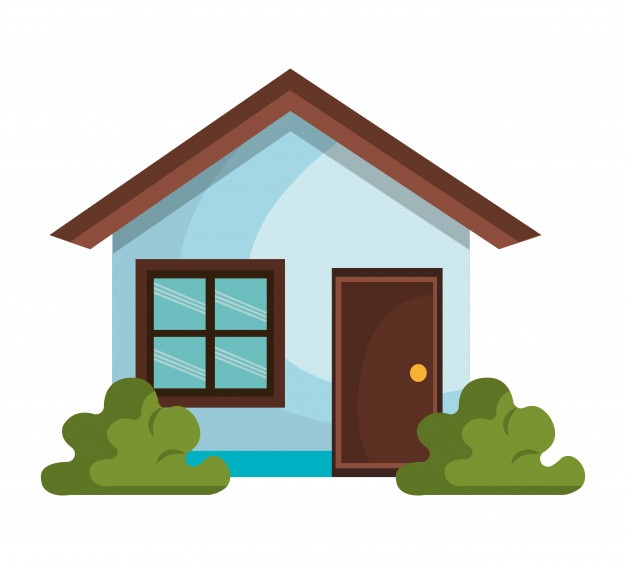
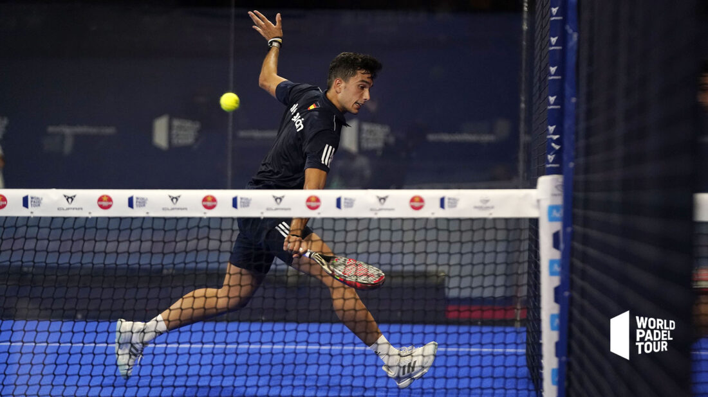
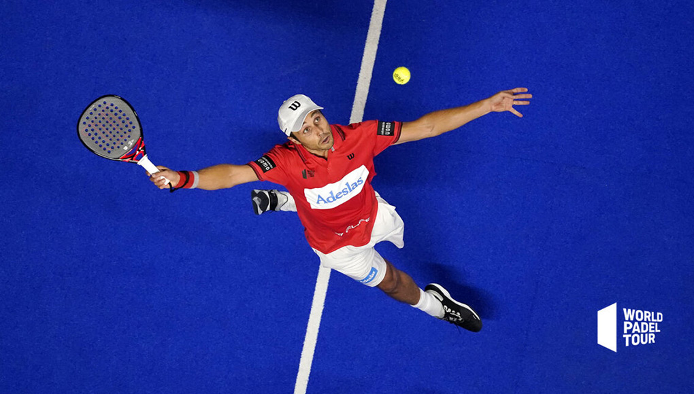
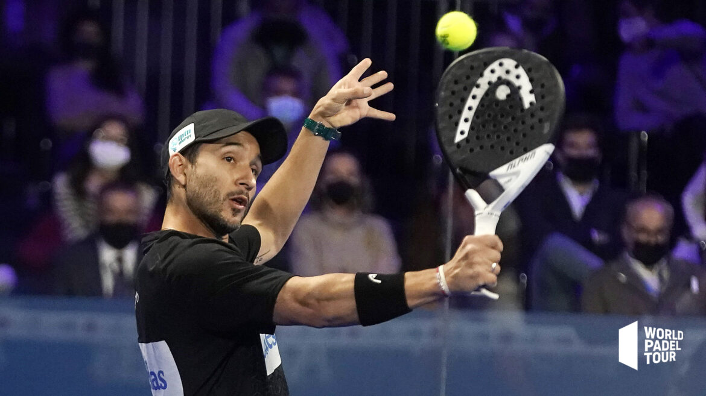
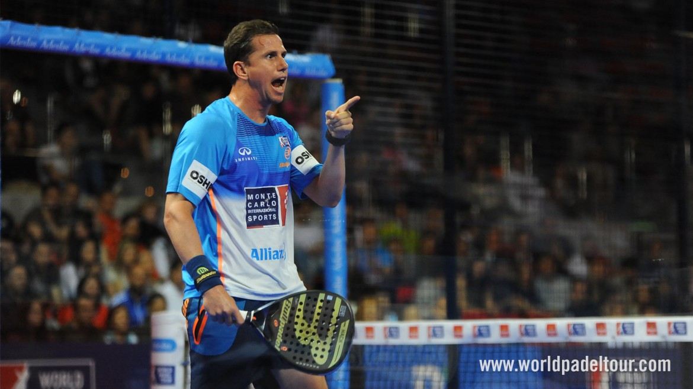
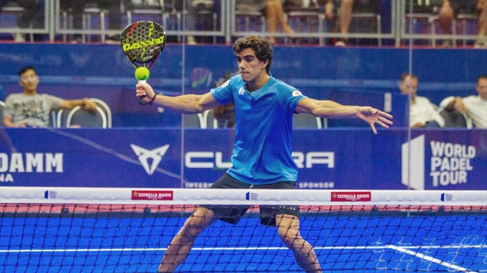

Es un jugador de pádel profesional argentino, que en la actualidad ocupa la 6ª plaza en el ranking World Padel Tour.
Agustín Tapia comenzó su carrera en el World Padel Tour en 2018, comenzando con Marcello Jardim como pareja deportiva. En el Catalunya Master, disputado en marzo de ese año, ya comenzó a destacar, llegando ambos hasta los cuartos de final.
A mitad de la temporada 2019, Fernando Belasteguín se convirtió en su nueva pareja deportiva. Juntos lograron el Madrid Master en septiembre de 2019, convirtiéndose en el primer título de Tapia, y con sólo 20 años de edad.
También llegaron a la final del Master Final, donde cayeron frente a Alejandro Galán y Pablo Lima. En 2020 continuaron juntos, logrando ganar dos títulos, el Sardegna Open y el Master Final. Pese a ello, y contra todo pronóstico, decidieron no continuar como pareja para la temporada 2021.
Nox, es la marca de pádel líder en España. Nox actualmente no patrocina tanto a profesionales, sino a futuras estrellas. Agustín Tapia lleva junto a esta marca desde que se hizo profesional, por lo que continúan su andadura juntos.
CUPRA, amplía su Tribu con cuatro nuevas incorporaciones que van camino de convertirse en la próxima generación de campeones: Agustín Tapia, Paula Josemaría y la pareja formada por Federico Chingotto y Juan Tello.
Adeslas, la marca líder en seguros de salud, renueva este año la confianza y el patrocinio en la pareja masculina integrada por Fernando Belasteguín y Agustín Tapia que disputaran el circuito WPT 2020.
Partidos jugados: 151
Partidos ganados: 101
Partidos perdidos: 50
Efectividad: 66,89
Victorias consecutivas: 10
Lugar de nacimiento: Catamarca - Argentina
Fecha de nacimiento: 24/07/1999
Altura: 1,79
Residencia: Barcelona - España
|  |
 |
 |
|  |
 |
 |